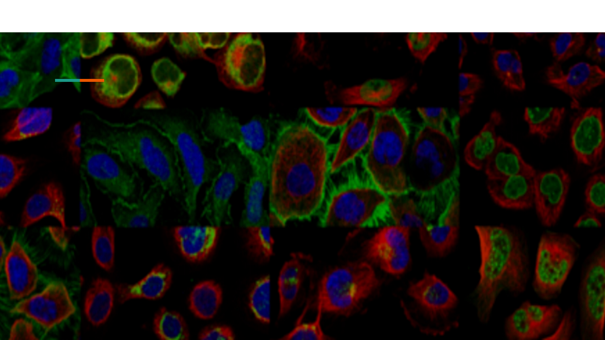
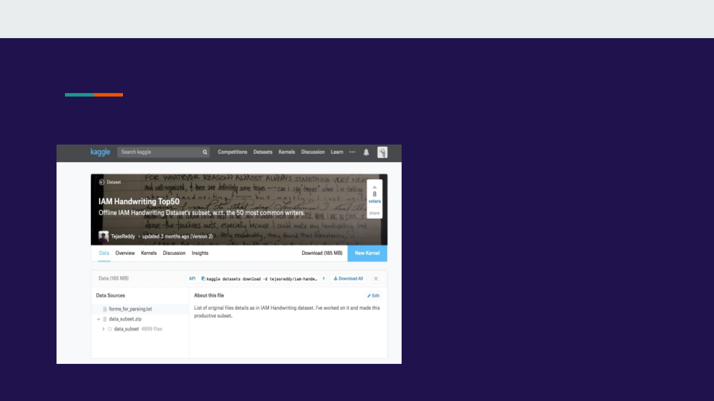
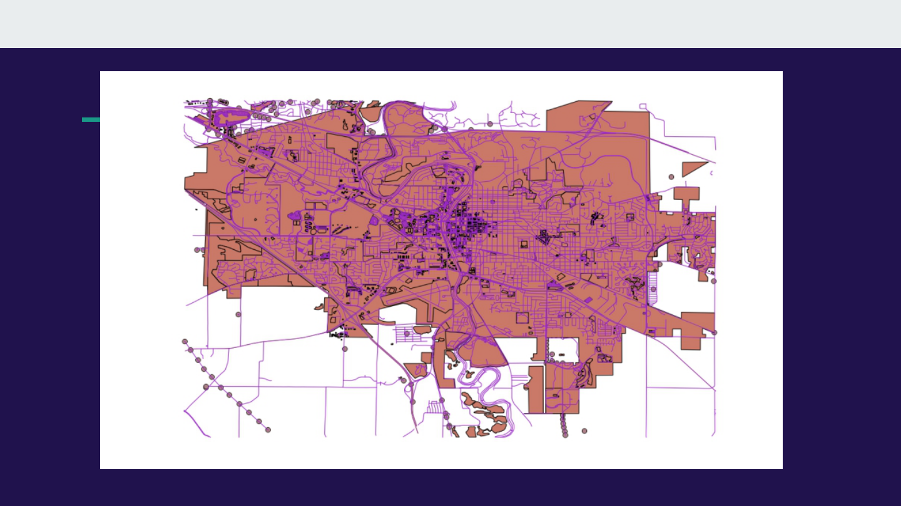

Hack on
Google Cloud Vision API and HERE Traffic API
Gong Chen, Kaiwen Huang, Qingyang Li

Hack around Google Cloud API & HERE Map
API
● Google Cloud API: test the accuracy of Google Cloud Vision OCR
● HERE Map API: pull real-time data traffic to build our own map service

Google Cloud related to Dataset
● From kaggle
● Images of Handwriting
message from 50
writers.
● We used google
vision api to configure
these messages from
images
● Nearly 6000
messages

Process: Vision API
● Manually configure the messages from images for 150 messages as ground truth
● Writing code in python to call google cloud vision api
● To read all the dataset we use and print all the text configured by google cloud
● Compare the result read by google AI to ground truth
● Calculate the accuracy
● The accuracy is about 70%
● More details on the result
Result: Vision API
● Use hack methods to pull real-time traffic data from HERE
● We can build up our own map using HERE data (real HACK!!!)
● Generated data: iowacity.osm
HERE Map
